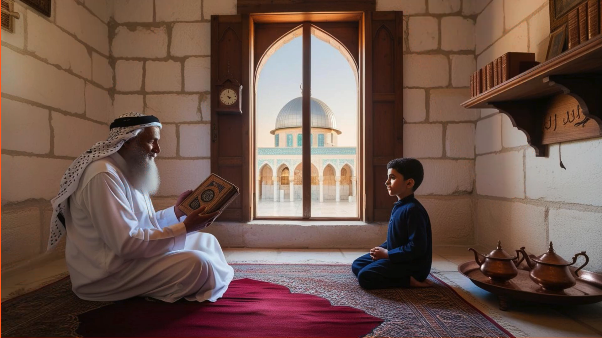

🎬 في قلب فلسطين
إعداد: الطالب أنس زاهدة – الصف الحادي عشر الأدبي – السنة الدراسية 2024-2025
قدّم الطالب أنس زاهدة من الصف الحادي عشر الأدبي هذا العمل الفني الذي يجمع بين مهارات السرد البصري وتقنيات التصميم الرقمي. من خلال استخدام أدوات مثل Canva والذكاء الاصطناعي، يعرض الفيديو مشاهد رمزية تعبّر عن ملامح الهوية الفلسطينية، مثل الأرض، الزيتون، المفتاح، والمقدسات. الفيديو يتميز بإخراجه البسيط لكن العميق في مضمونه، ويهدف إلى إبراز تمسّك الفلسطيني بأرضه وتاريخه في وجه التحديات. مشروع "في قلب فلسطين" هو مثال ملهم على كيف يمكن للتقنيات الحديثة أن تخدم القضايا الوطنية بأسلوب فني مؤثر.
